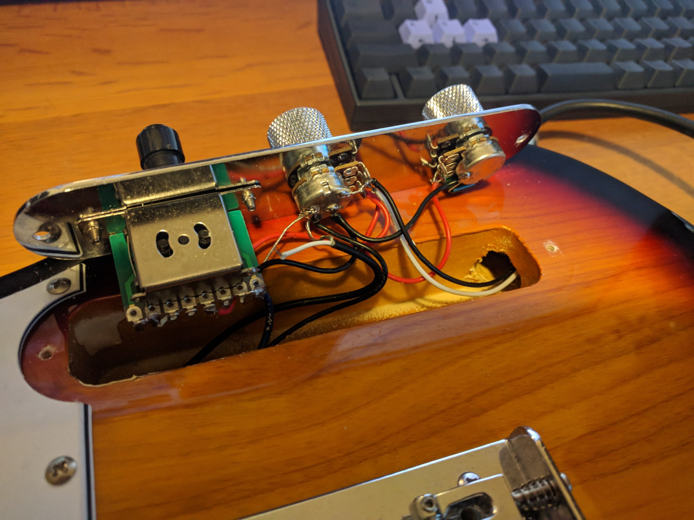
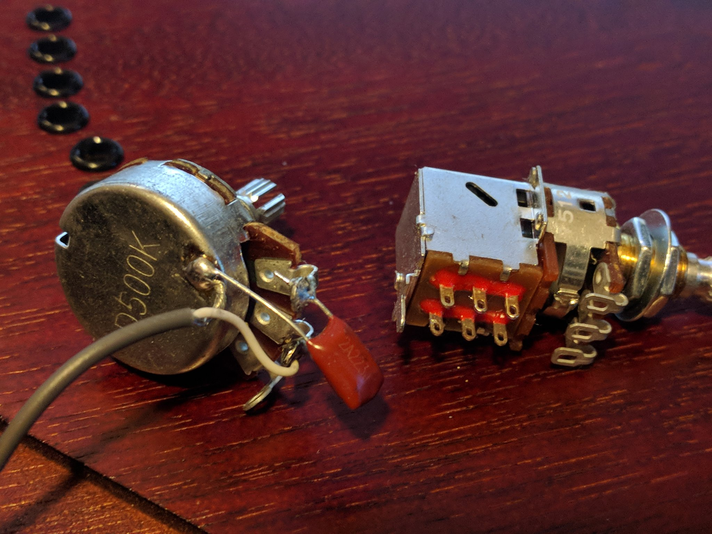
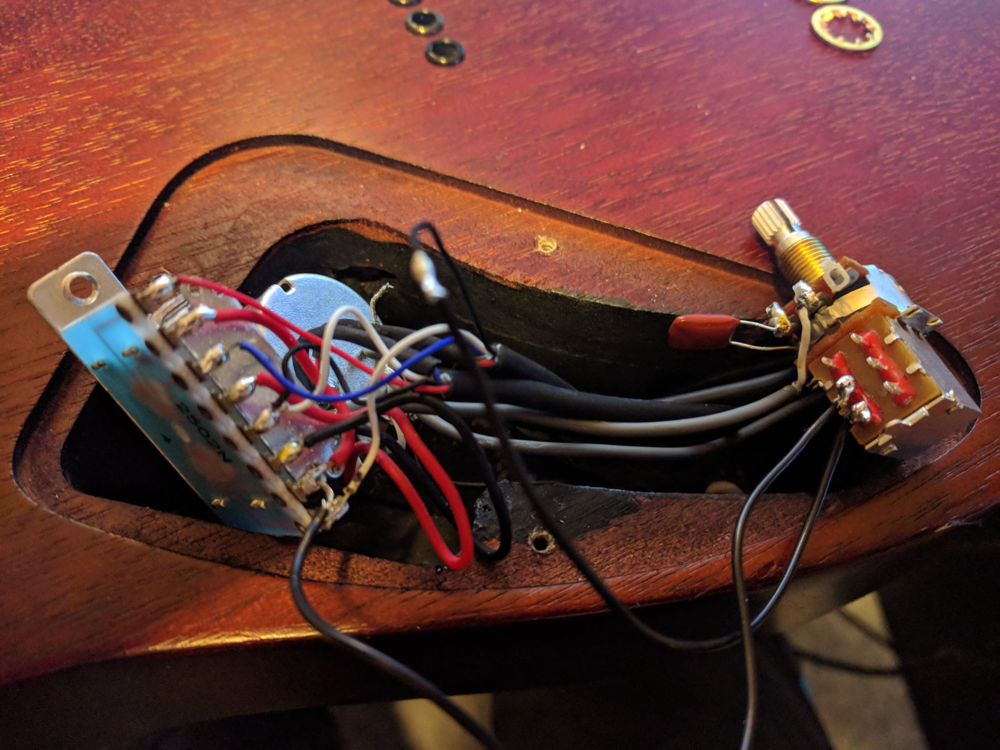

KARITECH
目次
ライフログ的な…
2018年02月25日 ギターのコイルタップ配線 アナログ回路
いつもプログラミングの話題ばかりするのもつまらないので，アナログ回路の話をしたいと思います．ちなみに大学時代に必修だった回路理論は一度落としました．全く専門的な部分はわかっていないのでご容赦ください．
ところで私にとって身近な回路というのはギターです．今日は仕事が忙しくて，普段は触らなくなったギターを久々に手に取ると音が出なくなっていました．中を開けてみると配線が切れていた…．通電テスターも持ってないので，一つづつPUセレクタに押し付けて(3wayなのに8箇所も接続する端子がある…???)，音がでるところに当たりをつけました．弦も外さなきゃいけないストラトと違ってテレキャスターはネジを外すだけで配線がいじれて，弦が同じ向きについているので，音を鳴らしながら回路がいじれるので良いですね．ハンダゴテを探すのに二時間くらいかかったのですが，高校生以来に久々にハンダ付けをしました．

図1: テレキャスターの配線．白い線のハンダがとれている
ハンダゴテを探していると，ギターのパーツで以前取り付けを挫折したコイルタップ付きのポットがでてきました．テレキャスターにはシングルコイルのピックアップ(PU)しかついていないので，IBANEZ RG7421というハムバッカーのギターに取り付けることに．ちなみにコイルタップとはハムバッカー(シングルコイルPUを2本並べたPU)を，ポットのノブについたスイッチでシングルコイルとして使う機能のことです．トーンポットやボリュームポットとしての機能も併用するため，例えば下記写真で左のトーンポットにある三端子と同様に，右のタップ付きポットの三端子に部品を配線すればトーンポットとして使えます．

図2: 元のポット(左)と，コイルタップ付きのポット(右)
本来，コイルタップのやることはとても簡単で，ノブを引っ張った時と押し下げた時で，6つの並んだ端子のうち上の2端子または下の2端子が通電するようになるだけのスイッチです(真ん中はいつもつながっている)．このページの図 がわかりやすいと思う．テレキャスと違って元から配線が複雑だったので，どうすればコイルタップできるかググってみたが，IBANEZの配線は変態すぎて全然参考になる情報がなかった…．ギターには通常複数のPUが搭載されており，どれを使うか・組み合わせるかをPUセレクタという部品で操作します．普通は2ハムバッカー搭載のギターでは3wayセレクタといってネック(上側)PU・両方のPU・ブリッジ(下側)PUを切り替えるのが主流だと思います．しかし，IBANEZはこうだ．

図3: RGのPUセレクタ構成
なんとすでにコイルタップ(右から2番目の状態)されている．それならば，わざわざコイルタップのポットをつける必要がないとも思うでしょう．しかし，私はテレキャスターと同じPUの状態，例えば上側PUまたは下側のみをコイルタップした状態が欲しい．そこで，PUをタップしていないときは上記の状態を成すものとして，タップした場合は下記の状態を構成できるようにします．

図4: RGのPUセレクタ構成(コイルタップ時)
つまり灰色の部分のフロントPUの片側をコイルタップポットでオン・オフできるようになれば良い． 問題は，どのケーブルが灰色の部分の通電に関係しているのか見つける必要があります．さすがにフロントかブリッジのPUかはケーブルがきてる方向からわかりました．しかし，最初のPU構成の図 3 によると右から2番目の状態ではタップになっているので，さきほどのテレキャスターで培った人力通電テスターの技術で，大まかな当たりをつけました．

図5: PUセレクタとの配線後
方法は簡単で，上記のセレクタにある8端子のうち，フロントPUから伸びている部分を指でさわりながら，ギターからの出力音を聞くだけです．通電していなければ何も音は流れないし，通電していればブーっという感じのVan Halenのイントロみたいな音がします．
最後に以上の方法で配線した，PUの6状態(図3 と図4 の左から2-4番目の状態を交互)を録音してみました．久々にギターを触ったので演奏はお粗末さまだが，音の違いはハッキリわかると思います．とくに5番目(ネックtap-ブリッジtap)と，その上で灰色PUを無効化した6番目(ブリッジtapのみ)なんかはかなり違うと思いました．
2018年02月25日 幾何平均・総乗の計算の小技 D
幾何平均の計算
\begin{align} \mathrm{gmean}(\mathbf{x}) = \left( \prod_{n=1}^{N} x_n \right)^{1/N} \end{align}なんかは総乗がでてくるため，指数的に値が増減して桁落ち／桁溢れを起こしやすくなる． そこで，掛け算をlog領域の足し算として行うことが考えられるが， さらに細かい浮動小数点における安定化のテクニックを mir の作者 @9il さんに教えてもらった．
https://github.com/libmir/numir/pull/24#discussion_r168958617
まず，浮動小数点 double y は「符号」(bool s), 「仮数」(mantissa, fraction, ulong f) と「指数」(exponent, ushort p)でできている．
https://dlang.org/library/std/bitmanip/double_rep.html
つまり \(y = -1^s f \times 2^p\) (ただし \(0.5 \geq f < 1\)) となっている．
うまく y をできるだけ桁溢れ／桁落ちせず計算するには，0.5-1付近の仮数と整数値の指数に分けて考える．
ちなみに f, p から y に変換するCの関数には double ldexp(double f, int p) ，
逆にy から f, p に分解するには double frexp(double x, int* p) が使える．
https://cpprefjp.github.io/reference/cmath/ldexp.html
最初の幾何平均を例にすると \(x_n\) は必ず正の値なので符号部は無視してできる． まず，総乗 \(y = \prod_{n=1}^{N} x_n\) を mir.math.numeric.Prod で計算する． この関数の凄いところとして， \(\prod_{n=1}^{N} x_n = \exp \sum_{n=1}^N \log x_n\) として 計算するよりも，仮数部が0.5-1にとどまるため数値的に安定かつ，log 計算が全く出てこないため高速である点に注目したい．
つぎに Prod \(y\) のメンバである仮数 (簡単のために 1未満の double で表現) \(y.x\) と指数 \(y.exp\) から
\begin{align} \mathrm{gmean}(\mathbf{x}) &= y^{1/N} \\ &= (y.x \times 2^{y.exp}) ^ {1/N} \\ &= 2^{y.exp + \left( \log_2 y.x \right) / N} \\ &= \left(y.x \times 2^{z - \lfloor z \rfloor}\right) \times 2^{\lfloor z \rfloor} \end{align}ただし \(z=y.exp / N\) である． 仮数部 \(\left(y.x \times 2^{z - \lfloor z \rfloor}\right)\) が 0.5-1の値になっているかは少し微妙なところだが， 0.5-1の値である \(y.x\) と1-2の値である \(2^{z - \lfloor z \rfloor}\) の積なので 0.5 - 2 の仮数ということになり， 桁オチも大したことなさそうなので，そのまま ldexp に渡しても大丈夫だと思っている (仮数が 1 を超えていれば半分にして，指数部に1足せば良さそうだが，それこそがldexp自体の仕事である)．
2018年02月24日 D言語でnumpyっぽいコードを書く D
今まで何度か取り上げてきた mir というD言語で便利な多次元配列(ndslice)のライブラリについての話です．
いままで記事
私が作っている numpy のような関数をサポートしている numir には最近大規模な機能追加がありました．
- format / stats / signal といった ndslice を駆使した応用的なモジュールの追加
- ドキュメントの充実 (メインのドキュメント, 検索機能つきのドキュメント)
- example の充実 (文字レベルRNN, 音源分離NMF)
1-2 は jmh530 さんや，mir本家の作者による実装も多く取り込まれており，私個人のプロジェクトからlibmirに移行して本当によかったなと思っています．mirにおけるndsliceの汎用性は本当に大きく，例えばD言語のプロット用ライブラリ ggplod とも簡単にインテグレートできます．

3に関しては，numpy や julia と同様な簡潔で小さいコードでも3-4倍は高速になるような例を書いています．上記の文字RNNの例ですと，
# numpy で RNN の順伝搬 for t in range(len(inputs)): xs[t] = np.zeros((vocab_size,1)) # encode in 1-of-k representation xs[t][inputs[t]] = 1 hs[t] = np.tanh(np.dot(Wxh, xs[t]) + np.dot(Whh, hs[t-1]) + bh) # hidden state ys[t] = np.dot(Why, hs[t]) + by # unnormalized log probabilities for next chars ps[t] = np.exp(ys[t]) / np.sum(np.exp(ys[t])) # probabilities for next chars loss += -np.log(ps[t][targets[t],0]) # softmax (cross-entropy loss)
// numir で RNN の順伝搬 foreach (t, i; inputs) { xs[t][i, 0] = 1; // encode in 1-of-k reps auto hp = t == 0 ? hprev : hs[t-1]; hs[t][] = map!tanh(mtimes(Wxh, xs[t]) + mtimes(Whh, hp) + bh); // hidden state ys[t][] = mtimes(Why, hs[t]) + by; // unnormalized log probabilities for next chars ps[t][] = map!exp(ys[t]); ps[t][] /= ps[t].sum!"fast"; // probabilities for next chars loss += -log(ps[t][targets[t], 0]); // softmax (cross-entropy loss) }
どうでしょうか，ほとんど同じように直感的にかけていると思います．型のdeductionが強力なD言語ではnumpy/julia同様に型を書く必要をありません．というより，式テンプレートとして型を保持するため手作業で型を書くことはほぼ不可能です．例えばnumir.signalにある blackman 窓を作る関数の返り値なんかは，こんな感じの長い型になってしまいます．
mir.ndslice.slice.Slice!(2,[1],mir.ndslice.iterator.MapIterator!(mir.ndslice.iterator.ZipIterator!(mir.ndslice.iterator.VmapIterator!(mir.ndslice.iterator.VmapIterator!(mir.ndslice.iterator.MapIterator!(mir.ndslice.iterator.VmapIterator!(mir.ndslice.iterator.IotaIterator!(long).IotaIterator,mir.ndslice.internal.RightOp!("*",real).RightOp).VmapIterator,mir.math.common.cos).MapIterator,mir.ndslice.internal.RightOp!("*",double).RightOp).VmapIterator,mir.ndslice.internal.RightOp!("-",double).RightOp).VmapIterator,mir.ndslice.iterator.VmapIterator!(mir.ndslice.iterator.MapIterator!(mir.ndslice.iterator.VmapIterator!(mir.ndslice.iterator.IotaIterator!(long).IotaIterator,mir.ndslice.internal.RightOp!("*",real).RightOp).VmapIterator,mir.math.common.cos).MapIterator,mir.ndslice.internal.RightOp!("*",double).RightOp).VmapIterator).ZipIterator,mir.functional.naryFun!("a + b").naryFun).MapIterator) blackman
一部の言語では型はドキュメントなので書くようにという話があると思いますが，mirでは多くの場合，諦めたほうが良いでしょう．¯\_(ツ)_/¯
あと，最後にもう一つ，なんと numir がウェブ上のコンパイラ run.dlang.io で動くようになりました．mir関係のライブラリはほとんどがサポートされているので，使い方がわからないとか，コード辺を共有するときに便利だと思います．
https://run.dlang.io/gist/671587b1452b916dc68dddd1cf507efb?compiler=ldc&args=-release
2018年01月16日 C++でネストした要素型の取得 :cpp: D
ごくまれにC++で
std::vector<std::vector<float>> vv;
のようなネストした型の最後の要素 (ここでは float) を取得したいことがある． D言語のように後方参照可能な型システムでは， 再帰的に型を辿れば簡単 だが，
template NestedElementType(T) { static if (isArray!T) { alias NestedElementType = NestedElementType!(ElementType!T); } else { alias NestedElementType = T; } }
C++ではそうはいかない．しかし， constexpr を使えば間接的に型の再帰的な操作が可能になる．
/* 対象のContainer型は .begin() メソッドで最初の要素を返すとする 通常，型は再帰できない template <typename E> using DeepElementTypeof = std::conditional_t<std::is_fundamental<E>::value, E, DeepElementTypeof<decltype(*std::declval<E>().begin())>>; */ // SFINAEとcostexprならできる #include <type_traits> #include <vector> template <typename E> constexpr bool is_element = std::is_fundamental<E>::value; template <typename E> constexpr std::enable_if_t<is_element<E>, E> deep_elem(E) { return E{}; } template <typename Container, typename _ = std::enable_if_t<!is_element<Container>>> constexpr auto deep_elem(Container il) { return deep_elem(*il.begin()); } template <typename E> using DeepElementTypeof = std::remove_cv_t<decltype(deep_elem(std::declval<E>()))>; std::vector<std::vector<float>> c; static_assert(std::is_same<DeepElementTypeof<decltype(c)>, float>::value); int main() {}
多次元配列を一次元配列に変換する関数なんかに便利だ．
注意したいのは，このコードではfundamental型しか最終要素として見なさない．例えば std::complex<float> などはコンパイルエラーになるだろうが， constexpr bool is_element = ... を適切に定義すれば良いはずだ．
2018年01月02日 おけましておめでとうございます. emacs
どうもここ二年は殆ど技術ブログを更新できませんでした。幾つか原因を考えたところ
- Markdownがしんどい (細かい方言、Github,MDWiki,Jekyllで微妙に仕様が違う)
- C++/CUDA(のような膨大な知識を要求する言語)をあまり書かなくなってネタが少ない
ということが挙げられます。私にとってMarkdownを使ってブログを書くのは表現力の低さ(文法ハイライトや数式表示に外部ツールが必要)、 とくにJekyll保守の面がしんどかったのです…。 そこで、何気なくEmacsに標準で付属しているorg-modeを試したところ、良さげだったので移行しました。 日常的にも仕事のメモで使っているのですが、不満は全く無く、Markdownに対する利点としては
- Emacsさえあれば環境構築は完了
- なんとなくMarkdownに文法が似てplain-textでも読み書きしやすい
- Emacsで文法ハイライトできる言語は全て対応されるので最強(Pygmentsなどがいらない)
- 表計算や表の整形もお手軽
- HTML出力(
C-c C-e h hで一発変換)ではMathjaxの数式組版も標準でサポート org-md-export-to-markdownでMarkdownへ出力できる(!)- ODT//TeX/PDF出力もお手軽。Pandocは要りません。
という唯一無二なツールでした。標準以外の機能としてはこんなものを使っています
- 雑記用に org-journal という自動で日時付きの見出しをorgファイルに挿入するパッケージ
- Mathjaxが古いので、最新版 DLして使っています。(数式番号が振られます)
- HTML出力が味気ないので、公式ページのCSSを改造 して使っています。
- HTML出力をリアルタイム更新でモニタするために browser-sync を使っています。(例:
browser-sync start --server --files **/*.html)
その他の細かい設定としてはこんな事をしてます。
;; org-journal をブログ用のリポジトリに1ファイルでまとめる (setq org-journal-date-format "%x") (setq org-journal-time-format "<%Y-%m-%d %R> ") (setq org-journal-file-format "journal.org") (setq org-journal-dir "~/Documents/repos/shigekikarita.github.io/") ;; org-mode からバッファ移動のコマンドを取り戻す (add-hook 'org-shiftup-final-hook 'windmove-up) (add-hook 'org-shiftleft-final-hook 'windmove-left) (add-hook 'org-shiftdown-final-hook 'windmove-down) (add-hook 'org-shiftright-final-hook 'windmove-right) ;; org-mode は行の折り返しなしモードになるので、無効にする (setq org-startup-truncated nil) ;; 日本語PDFのためにlualatex他、便利TeXパッケージを使う (setq org-latex-classes '(("ltjsarticle" "\\documentclass{ltjsarticle} \\usepackage{url} \\usepackage{amsmath} \\usepackage{newtxtext,newtxmath} \\usepackage{graphicx} \\usepackage{luatexja} \\usepackage{hyperref} [NO-DEFAULT-PACKAGES] [PACKAGES] [EXTRA]" ("\\section{%s}" . "\\section*{%s}") ("\\subsection{%s}" . "\\subsection*{%s}") ("\\subsubsection{%s}" . "\\subsubsection*{%s}") ("\\paragraph{%s}" . "\\paragraph*{%s}") ("\\subparagraph{%s}" . "\\subparagraph*{%s}")) )) (setq org-latex-pdf-process '("latexmk -gg -lualatex %f")) (setq org-latex-default-class "ltjsarticle")
あとC++/CUDAも1,2年離れていたのですが、仕事でまた使うようになり、 リハビリがてらC++17対応の C++ Template Complete Guide を読み進めているので、 面白いネタがあれば紹介しようと思います。
それでは、今年も宜しくお願いします。